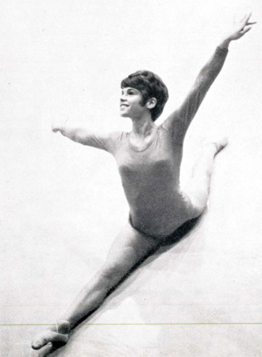

Joyce Tanac (USA)

1968 US Olympian
1969 AAU Champion
Joyce began acrobatics at age 3, tumbling at age 10 and gymnastics at age 11. She trained at the YMCA with coach George Lewis. She graduated of the University of Washington in 1974 with a degree in pharmacy. She and husband George Schroeder have two children.
Competition Results
1965
University of Victoria Invitational: 1st AA, 1st V,1st UB, 1st FX, 3rd
B
YMCA National Championships: 1st AA, 1st V, 1st FX, 2nd UB, 2nd B
1966
North-South Invitational: 2nd V
University of Victoria Invitational: 1st AA
World Championships: 6th Team, 40th AA
YMCA Championships: 1st AA, 1st V, 1st UB, 1st B, 1st FX
1967
AAU Championships: 3rd AA, 3rd FX
Pan American Games: 1st Team, 2nd AA, 2nd FX, 4th V, 4th UB, 4th B
Pre-Olympic Test Event: 25th AA
1968
AAU Championships: 2nd AA, 1st V, 3rd B, 3rd FX, 5th UB
North American Championships: 4th AA, 1st V, 3rd B, 3rd FX, 5th UB
Olympic Games: 6th Team, 30th AA
US Olympic Trials: 1st AA
1969
AAU Championships: 1st AA, 1st V, 1st UB, 1st B, 1st FX
Copa de las Americas: 2nd AA, 1st B, 2nd V 2nd UB, 5th FX
International Elite Competition (JPN/USA/USSR): 8th AA
USGF Championships: 1st AA
1970
AAU Championships: 3rd AA, 3rd B
USGF Championships: 3rd AA
West Coast Invitational: 1st AA, 1st V, 1st B, 1st FX, 2nd UB
This page was created on December
30, 2006 and was last updated on July 01, 2021.
© Gymn Forum